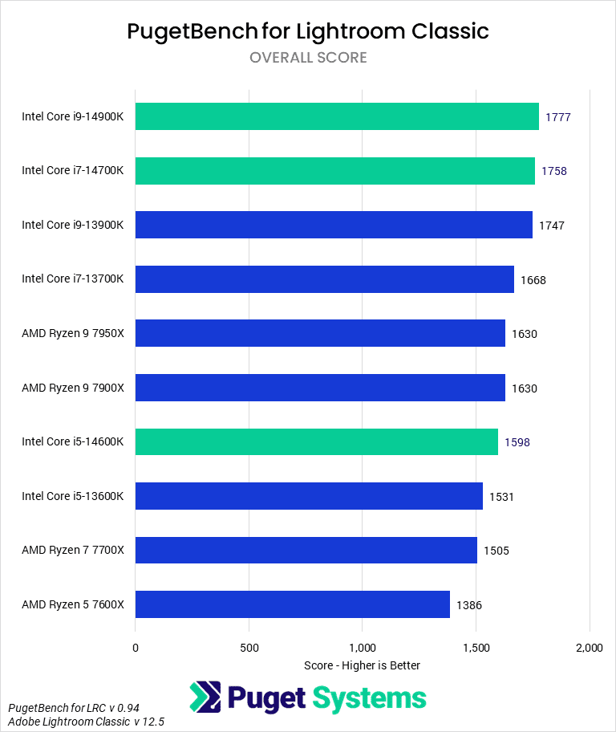

What is a Processor ?
A processor is like the brain of a computer. It helps the computer do all sorts of tasks, like running programs, playing games, and browsing the internet. It works really fast, doing lots of calculations every second. Just like how you think and make decisions, a processor helps the computer make decisions and do things quickly. So, when you click on something or type on the keyboard, the processor helps the computer understand what you want it to do and then does it for you!
Intel's 14th gen :
Intel's 14th gen processors, with their refined architecture and enhanced manufacturing processes, promise significant leaps in performance, efficiency, and scalability over their predecessors. With advancements in transistor technology and architecture design, Intel is aiming to deliver unmatched single-threaded performance, crucial for tasks like gaming and certain productivity applications. Additionally, improvements in multi-core performance are expected to cater to the growing demands of content creators and professionals engaged in multi-threaded workloads. Intel's focus on integrated graphics solutions is also anticipated to bring notable enhancements, potentially narrowing the gap with dedicated graphics cards in entry-level gaming and content creation scenarios.
Ryzen 7000 series :
AMD's Ryzen 7000 series is poised to build upon the solid foundation laid by its predecessors, leveraging innovative technologies and architectural enhancements to deliver even greater performance and efficiency gains. With advancements in chiplet design, cache hierarchy, and power management, AMD aims to further solidify its position as a powerhouse in multi-threaded workloads, offering unparalleled performance per watt. The integration of cutting-edge technologies such as DDR5 memory support and PCIe Gen 5 connectivity is expected to unlock new levels of performance and bandwidth, catering to the demands of next-generation applications and workflows. Moreover, AMD's commitment to backward compatibility ensures that users can seamlessly upgrade to Ryzen 7000 processors without needing to invest in a new motherboard, enhancing the value proposition for existing AMD enthusiasts and newcomers alike.
Which is Better ?
In terms of which processor is better suited for specific tasks, the answer largely depends on individual requirements and preferences. Intel's 14th gen processors may hold the edge in scenarios where single-threaded performance is paramount, such as gaming or lightly-threaded productivity tasks. Conversely, AMD's Ryzen 7000 series could prove to be the superior choice for workloads that heavily leverage multi-threaded performance, such as content creation, rendering, and scientific computing. Ultimately, both Intel and AMD are pushing the boundaries of CPU technology, offering compelling options for users seeking the ultimate balance of performance, efficiency, and versatility in their computing experiences.